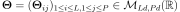

KarhunenLoeveQuadratureAlgorithm¶
(Source code, png, hires.png, pdf)
{kind=link}
{kind=link}
-
class
KarhunenLoeveQuadratureAlgorithm(*args)¶ Computation of Karhunen-Loeve decomposition using Quadrature approximation.
- Available constructors:
KarhunenLoeveQuadratureAlgorithm(domain, bounds, covariance, experiment, basis, basisSize, mustScale, s)
KarhunenLoeveQuadratureAlgorithm(domain, bounds, covariance, marginalDegree, s)
Parameters: - domain :
Domain The domain on which the covariance model and the Karhunen-Loeve eigenfunctions (modes) are discretized.
- bounds :
Interval Numerical bounds of the domain.
- covariance :
CovarianceModel The covariance function to decompose.
- experiment :
WeightedExperiment The points and weights used in the quadrature approximation.
- basis : sequence of
Function The basis in which the eigenfunctions are projected.
- marginalDegree : int
The maximum degree to take into account in the tensorized Legendre basis.
- mustScale : boolean
Flag to tell if the bounding box of the weighted experiment and the domain have to be maped or not.
- s : float,

The threshold used to select the most significant eigenmodes, defined in
KarhunenLoeveAlgorithm.
Notes
The Karhunen-Loeve quadrature algorithm solves the Fredholm problem associated to the covariance function
 : see
: see KarhunenLoeveAlgorithmto get the notations.The Karhunen-Loeve quadrature approximation consists in replacing the integral by a quadrature approximation: if is the weighted experiment (see
WeightedExperiment) associated to the measure , then for all functions measurable wrt , we have:
, then for all functions measurable wrt , we have:If we note , we build a more general quadrature approximation such that:
where only the points are considered.
We introduce the matrices  such that , and such that .
The normalisation constraint ang the orthogonality of the in leads to:
(1)¶
The Galerkin approach leads to the following generalized eigenvalue problem:
(2)¶
where and .
The collocation approach leads to the following generalized eigenvalue problem:
(3)¶
Equations (2) and (3) are equivalent when is invertible.
OpenTURNS solves the equation (2).
The second constructor is a short-hand to the first one, where basis is the tensorized Legendre basis (see
OrthogonalProductPolynomialFactoryandLegendreFactory), experiment is a tensorized Gauss-Legendre quadrature (seeGaussProductExperiment), basisSize is equal to marginalDegree to the power the dimension of domain and mustScale is set to True.Examples
Discretize the domain
 and create a covariance model:
and create a covariance model:>>> import openturns as ot >>> bounds = ot.Interval([-1.0]*2, [1.0]*2) >>> domain = ot.IntervalMesher([10]*2).build(bounds) >>> s = 0.01 >>> model = ot.AbsoluteExponential([1.0]*2)
Give the basis used to decompose the eigenfunctions:
here, the 10 first Legendre polynomials family:
>>> basis = ot.OrthogonalProductPolynomialFactory([ot.LegendreFactory()]*2) >>> functions = [basis.build(i) for i in range(10)]
Create the weighted experiment of the quadrature approximation: here, a Monte Carlo experiment from the measure orthogonal wrt the Legendre polynomials family:
>>> experiment = ot.MonteCarloExperiment(basis.getMeasure(), 1000)
Create the Karhunen-Loeve Quadrature algorithm:
>>> algorithm = ot.KarhunenLoeveQuadratureAlgorithm(domain, bounds, model, experiment, functions, True, s)
Run it!
>>> algorithm.run() >>> result = algorithm.getResult()
Methods
getBasis()Accessor to the functional basis. getClassName()Accessor to the object’s name. getCovarianceModel()Accessor to the covariance model. getDomain()Accessor to the domain. getExperiment()Accessor to the points and weights of the quadrature approximation. getId()Accessor to the object’s id. getMustScale()Accessor to scale option. getName()Accessor to the object’s name. getResult()Get the result structure. getShadowedId()Accessor to the object’s shadowed id. getThreshold()Accessor to the threshold used to select the most significant eigenmodes. getVisibility()Accessor to the object’s visibility state. hasName()Test if the object is named. hasVisibleName()Test if the object has a distinguishable name. run()Computation of the eigenvalues and eigenfunctions values at the quadrature points. setCovarianceModel(covariance)Accessor to the covariance model. setName(name)Accessor to the object’s name. setShadowedId(id)Accessor to the object’s shadowed id. setThreshold(threshold)Accessor to the limit ratio on eigenvalues. setVisibility(visible)Accessor to the object’s visibility state. -
__init__(*args)¶ Initialize self. See help(type(self)) for accurate signature.
-
getBasis()¶ Accessor to the functional basis.
Returns: - basis :
Basis The basis in wich the eigenfunctions are projected.
- basis :
-
getClassName()¶ Accessor to the object’s name.
Returns: - class_name : str
The object class name (object.__class__.__name__).
-
getCovarianceModel()¶ Accessor to the covariance model.
Returns: - covModel :
CovarianceModel The covariance model.
- covModel :
-
getDomain()¶ Accessor to the domain.
Returns: - domain :
Domain - The domain :math:`cD_N` that discretizes the domin :math:`cD`.
- domain :
-
getExperiment()¶ Accessor to the points and weights of the quadrature approximation.
Returns: - experiment :
WeightedExperiment The points and weights used in the quadrature approximation.
- experiment :
-
getId()¶ Accessor to the object’s id.
Returns: - id : int
Internal unique identifier.
-
getMustScale()¶ Accessor to scale option.
Returns: - mustScale : boolean
Flag to tell if the bounding box of the weighted experiment and the domain have to be maped or not.
-
getName()¶ Accessor to the object’s name.
Returns: - name : str
The name of the object.
-
getResult()¶ Get the result structure.
Returns: - resKL :
KarhunenLoeveResult The structure containing all the results of the Fredholm problem.
Notes
The structure contains all the results of the Fredholm problem.
- resKL :
-
getShadowedId()¶ Accessor to the object’s shadowed id.
Returns: - id : int
Internal unique identifier.
-
getThreshold()¶ Accessor to the threshold used to select the most significant eigenmodes.
Returns: - s : float, positive
The threshold
 .
.
Notes
OpenTURNS truncates the sequence
 at the index
at the index  defined in (3).
defined in (3).
-
getVisibility()¶ Accessor to the object’s visibility state.
Returns: - visible : bool
Visibility flag.
-
hasName()¶ Test if the object is named.
Returns: - hasName : bool
True if the name is not empty.
-
hasVisibleName()¶ Test if the object has a distinguishable name.
Returns: - hasVisibleName : bool
True if the name is not empty and not the default one.
-
run()¶ Computation of the eigenvalues and eigenfunctions values at the quadrature points.
Notes
Runs the algorithm and creates the result structure
KarhunenLoeveResult.
-
setCovarianceModel(covariance)¶ Accessor to the covariance model.
Parameters: - covModel :
CovarianceModel The covariance model.
- covModel :
-
setName(name)¶ Accessor to the object’s name.
Parameters: - name : str
The name of the object.
-
setShadowedId(id)¶ Accessor to the object’s shadowed id.
Parameters: - id : int
Internal unique identifier.
-
setThreshold(threshold)¶ Accessor to the limit ratio on eigenvalues.
Parameters: - s : float,

The threshold
defined in (3).
- s : float,
-
setVisibility(visible)¶ Accessor to the object’s visibility state.
Parameters: - visible : bool
Visibility flag.